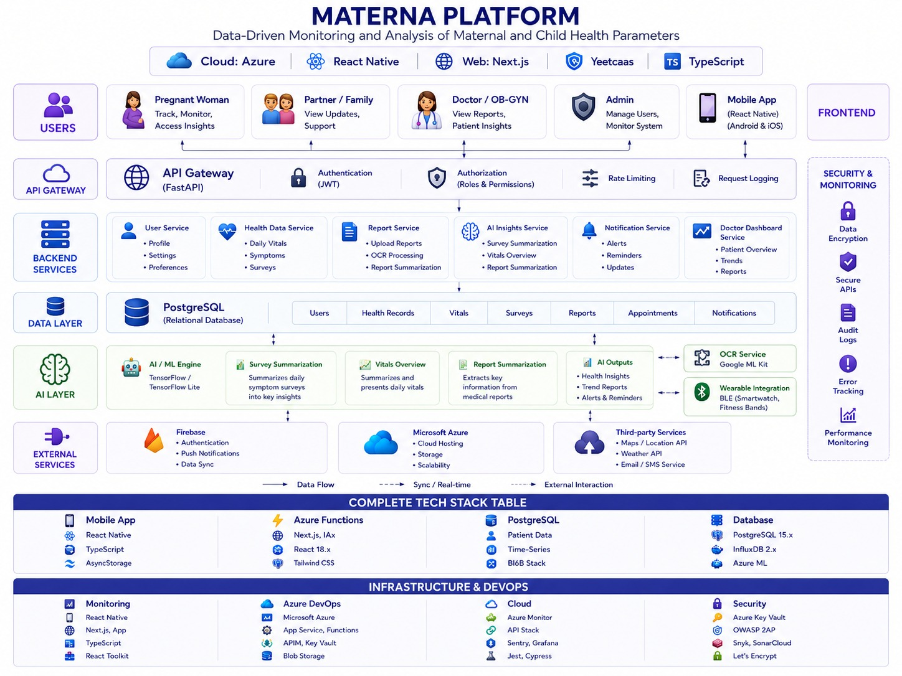
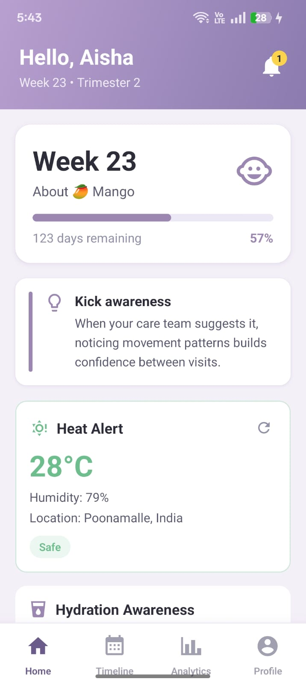
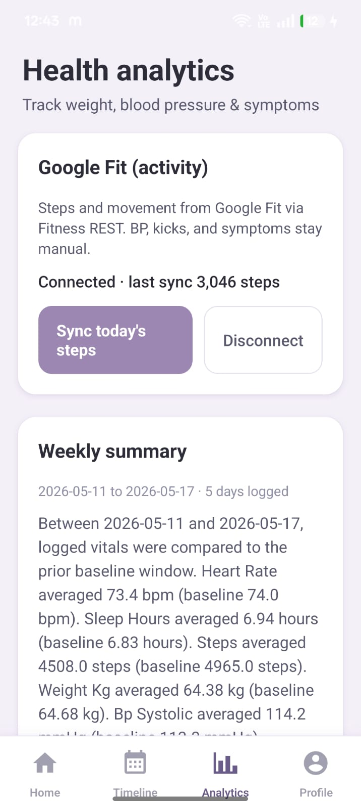

Patient
Track vitals, symptoms, hydration, nutrition, appointments, and medical records with guided pregnancy timeline content.
A full-stack pregnancy care platform connecting expectant mothers, partners, and doctors through one unified system.
Patient mobile app · Doctor web dashboard · REST API backend — designed for end-to-end health tracking, clinical review, and cost-aware intelligence.
Pregnancy health data is scattered — vitals in one app, appointments elsewhere, prescriptions in PDFs. Doctors lack a single longitudinal view between visits.
One platform: mothers track daily health on mobile, partners stay informed, doctors review trends and records in a dedicated dashboard — all backed by a secure API.
Track vitals, symptoms, hydration, nutrition, appointments, and medical records with guided pregnancy timeline content.
Join via invite code, receive shared insights and notifications to support the pregnancy journey.
Approve appointments, review weekly summaries, trend charts, medical vault, and exportable clinical reports.
Three client surfaces talk to one FastAPI backend. JWT secures every request. PostgreSQL persists all health data. AI is optional — never a hard dependency.
Shipped stack vs early design: This page reflects the implemented repository (Docker Compose, FastAPI, Vite dashboard, local Ollama). An earlier concept diagram explored Azure and TensorFlow — the production demo runs on the stack above.

Vitals, Google Fit sync, weekly LLM or deterministic summaries, gestational-week trend charts.
Patient requests slot → doctor approves in dashboard → notification to patient.
PDF upload, prescription extraction, plain-language summaries for patient and doctor.
Rule-based daily meal plans adjusted for trimester, BP, and hydration — zero LLM cost.
Geolocation + weather → heat severity score → personalized hydration reminders.
Invite codes, shared vitals insights, partner-specific notifications.
Kick counter, contraction timer, hospital bag checklist, medicine refill alerts.
Summary, trends, vault, and shareable report — four tabs per patient.
requested.
scheduled or cancelled; in-app notification + optional push.
Full walkthrough of the patient app — home dashboard, health analytics, Google Fit sync, and weekly summary.


Heat alerts fired "high" at ~28°C because humidity alone triggered severity — false positives in moderate climates.
Rewrote scoring in useHeatHydration.ts: humidity only counts when temperature ≥30°C.
Local Ollama sometimes failed JSON-mode responses or was unavailable during demos.
Dual-path in weekly_summary_service and report_intelligence: LLM first, deterministic regex fallback always.
PDF multipart uploads broke when Axios set wrong Content-Type on FormData.
Custom interceptor clears Content-Type for FormData; 120s timeout with AbortController on mobile.
React Native 0.84 dependency mismatches caused build failures on several native modules.
Seven patch-package patches for reanimated, screens, svg, push-notification, and related libs.
Appointments went straight to scheduled with no doctor approval step.
Migration 010_appointment_requested_status.sql adds requested status and dashboard approval UI.
Hydration logging failed silently when API was unreachable on poor network.
AsyncStorage optimistic UI — local intake preserved and synced when connection returns.
Cost-aware engineering: free APIs where possible, local LLM instead of paid inference, and caching to avoid redundant work.